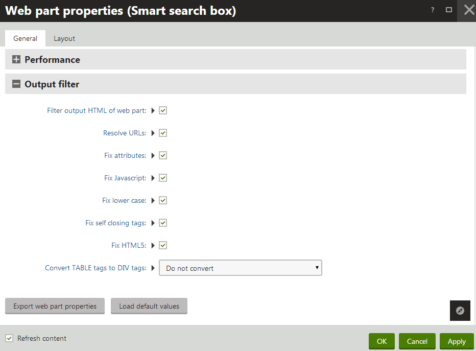

Using output filters
Output filters modify the HTML code that the system renders for pages on the live site. The filters make changes to the code before sending it to the browsers of visitors. Output filters do not affect the pages of the Kentico administration interface.
Note: Applying output filters adds steps to the processing of pages, and may slow down the website. If the output code of your pages is already valid by default, and you do not need any of the filtering features, we recommend disabling the output filter for your website. See the Applying output filters section for details.
Output filter types
The following types of output filtering are available:
|
Filter type |
Description |
|
Form filter |
The form filter fixes issue with non-working postbacks on pages that use URL rewriting. It ensures that forms, dialogs and buttons work correctly on pages managed by Kentico. |
|
URL resolving filter |
Resolves relative URLs so that they contain the root URL of the website. For example, the filter changes ~/mypage1/mypage2.aspx to:
The filter only modifies URLs inside src and href attributes. |
|
XHTML filter |
Fixes XHTML incompatibilities. Specifically, the filtering functionality can ensure the following things:
You can also enable fixing of XHTML errors for content entered and saved in the system's WYSIWYG editors. This can be configured globally by adding the CMSWYSIWYGFixXHTML key into the /configuration/appSettings section of your application's web.config file: <add key="CMSWYSIWYGFixXHTML" value="true" /> |
|
HTML 5 filter |
The output filter provides a way to replace tag attributes that are obsolete in HTML5. Such attributes are removed and the system instead assigns CSS classes named in format <attribute name>_<attribute value>. You need to define these classes in the CSS stylesheet used by the website's pages. The affected attributes are:
For example: <table cellpadding="2" cellspacing="4">is replaced by: <table class="cellpadding_2 cellspacing_4"> |
|
Converting Tables to Div tags |
You can use the output filter to automatically convert <table> elements and their child <tr> and <td> tags to <div> elements with appropriate CSS classes assigned (named according to the replaced tag). You need to define these classes in the CSS stylesheet used by the website's pages. For example: <table> <tr><td>A</td><td>B</td></tr></table>is replaced by: <div class="table"> <div class="tr"> <div class="td">A</div> <div class="td">B</div> </div></div>Tip: You can enable or disable table conversion for specific blocks of HTML code by marking them with class="_divs" or class="_nodivs" attributes. The filter then allows you to convert only tables designated by the _divs class, or all tables except for those marked with _nodivs. See the descriptions of the output filter settings below. |
Applying output filters to your website
By default, the system applies the output filters to all pages. If you do not wish to use the filters for specific sections of the website (for example due to performance reasons), you can disable them through the Settings application in the System -> Output filter category.
Individual Excluded URLs fields are available for particular filter types.
You can disable output filters for all pages that start with a specific URL path by entering this path into the corresponding field (without the ~ character and extension).
Multiple URL paths may be added, separated by semicolons (;).
Note: The settings only exclude specific URLs, not entire pages. For example, if you exclude the /Home URL path, but then access the Home page through a different URL or alias (such as the website root configured to display the Home page), output filtering will still be enabled.
Examples:
/ - disables the filter for the entire website.
/Products - disables filtering for the Products page under the website root and all other pages whose URL path starts with /Products (e.g. child pages).
/Services;/News - excludes all pages whose URL path starts with /Services or /News.
/Company. - by adding the period character (".") after the URL path, you can exclude only one specific page, but not its child pages (this does not work with extensionless URLs).
The following table describes all website settings available in the Output filter category:
|
General |
|
|
Excluded output form filter URLs |
Specifies the URLs of the pages that the system excludes from the Form output filter. |
|
Excluded resolve filter URLs |
Specifies the URLs of the pages that the system excludes from the URL resolving output filter. |
|
XHTML filter |
|
|
Excluded XHTML filter URLs |
Specifies the URLs of the pages that the system excludes from all functionality provided by the XHTML output filter. |
|
Excluded XHTML attributes filter URLs |
Specifies the URLs of the pages that the system excludes from the Tag attribute XHTML filter. |
|
Excluded XHTML JavaScript filter URLs |
Specifies the URLs of the pages that the system excludes from the JavaScript tag XHTML filter. |
|
Excluded XHTML lower case filter URLs |
Specifies the URLs of the pages that the system excludes from the Lower case XHTML filter. |
|
Excluded XHTML self close filter URLs |
Specifies the URLs of the pages that the system excludes from the Self closing tag XHTML filter. |
|
Excluded HTML5 filter URLs |
Specifies the URLs of the pages that the system excludes from the HTML5 output filter. |
|
Indent output HTML |
Indicates if the system processes the HTML output of all pages into a properly indented, easier to read format. The indentation applies to all where the XHTML output filter is enabled. |
|
Convert TABLE tags to DIV tags |
Determines which tables the output filter converts to <div> elements. Table conversion can be:
|
Enabling output filters for specific web parts
You can enable the output filters separately for the code generated by web parts. This allows you to filter the output of specific instances of web parts, even if their page is excluded from the output filter via the website settings. This is also the recommended approach performance-wise over having output filters enabled for whole pages.
Note: The system always uses output filtering for web parts on pages that are not excluded through the website settings.
To access the output filter settings of web parts:
Open the Pages application.
Edit a page on the Design tab.
Configure (double-click) the web part.
Enable the Filter output HTML of web part property in the Output filter section.
This section of properties is available for all web parts.
Adjust the remaining properties in the Output filter section.
The configuration options correspond with the available types of output filters.

Enabling output filtering for web parts